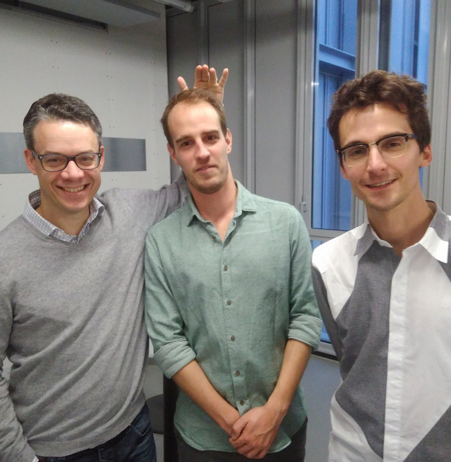
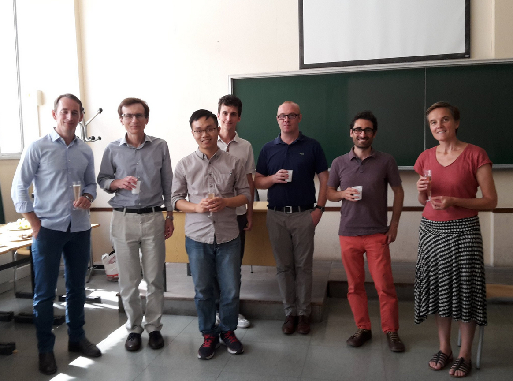

Pierre Alquier
RIKEN AIP - Approximate Bayesian Inference Team - Research scientist
Current PhD students
Amélie Rosier: "Statistique des modèles aléatoires non markoviens", co-supervised with N. Marie at ESME Sudria et Université Paris Nanterre, 2020-...
Former PhD students
Badr-Eddine Cherief-Abdellatif: "Contributions to the theoretical study of variational inference and robustness", ENSAE 2017-2020. Link to the thesis.
Léna Carel: "Analyse de données volumineuses dans le domaine du transport", thèse Cifre en partenariat avec transdev , ENSAE 2016-2019. Link to the thesis.

Vincent Cottet: "Theoretical Study of some Statistical Procedures applied to Complex Data", ENSAE, 2014-2017 (co-supervised with Nicolas Chopin). Link to the thesis.

The Tien Mai: "Bayesian estimation of low-rank matrices", UCD Dublin 2014-2015 then ENSAE 2015-2017. Link to the thesis.

Current and past MSc thesis supervised
Dimitri Meunier (ENSAE Paris) -- 2020.
Lucie Perrotta (EPFL and RIKEN AIP) -- 2020.
Keefe Murphy (UCD Dublin) -- 2014.
Vincent Cottet (UCD Dublin) -- 2014.
Lucy Small (UCD Dublin) -- 2013.